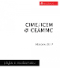

Recordings
Au-delà
(empreintes DIGITALes, IMED 13125) audio CD.Solo album of acousmatic works. Includes Dark Glass and the audio-only
version of LEXICON.
Also includes works from the 1980s and 1990s.
Order at electrocd.com
Miroirs obscurs
(empreintes DIGITALes, IMED 0789) 5.1 high definition audio DVD.Solo album of surround-sound works. Includes the suite Danses
acousmatiques.
Also includes Penmon Point, Benllech
Shells, Llanddwyn Skies and Cable
Bay.
Order at electrocd.com
Shadow Piano
(Innova Recordings, INNOVA874) audio CD.Xenia Pestova plays works for piano/toy piano and electronics. Includes Schattenklavier.
Order at innova.mu
|  | CIME / ICEM @
CEAMMC – Moscow 2017 AUDIOMAT 201709 |

|
Música Maximalista/Maximal Music Vol 1 (V CIMESP 2003) Studio PANaroma 199.017.216 |
 |
Legacies - Works from BEAST Volume 2 Sargasso, 2003 - SCD 28046 |
 |
5 - Prix International Noroit - Léonce Petitot
1998 Magison/INA-GRM, 1998 NOR5 247982 |
 |
Cultures
Electroniques 4 Le chant du monde, 1989 LDC 278049/50 |
 |
Cultures
Electroniques 6 Le chant du monde, 1991 |
 |
Cultures
Electroniques 10 Le chant du monde, 1998 LDC 278063/064 |
 |
Digital Playgrounds ICMA, 1995 - CD 1600 |
 |
Project 91 (Concrete 1991) Also available on vinyl as Project One (The Produkt Korps PKLP1) |